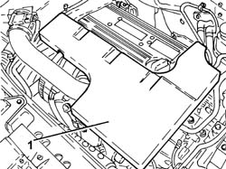
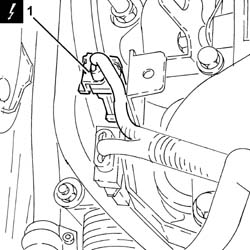
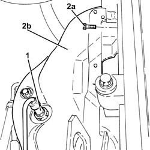
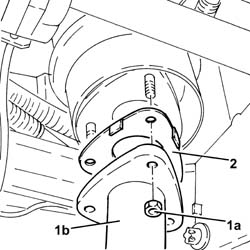
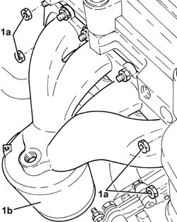
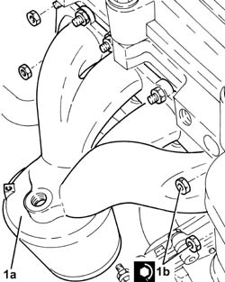
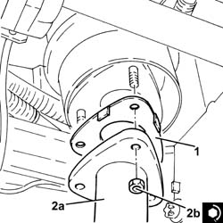
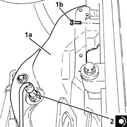
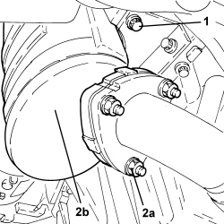
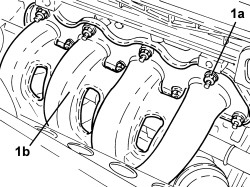

1072C16 EXHAUST MANIFOLD WITH CATALYTIC CONVERTER - R.R.
- Path
- Procedures > 10 ENGINE > 1072 INLET AND EXHAUST MANIFOLDS > 1072C EXHAUST MANIFOLDS > 1072C16 EXHAUST MANIFOLD WITH CATALYTIC CONVERTER - R.R.
- Kind
- repair procedure (removal / refitting; the operation number is the code)
- Applies to
- engines: 1.8, 2.2; all production periods
- Interactive page
- https://sloeber94.github.io/elrnDB-fCrm/en/#/194000355
Applies to: engines: 2.2; all production periods
 Removing
Removing
 Refitting
Refitting- Position the vehicle on a lift.
- Make sure that the ignition key is in the OFF position, then disconnect the battery terminal (-).
Description | Connector | |
|---|---|---|
- | Battery |
1. Remove the sound insulation cover fastened to the engine by three pins.

Applies to: engines: 2.2; all production periods
1. Disconnect the electrical connection for the front Lambda sensor to the catalytic converter.
Description | Connector | |
|---|---|---|
1 | Lambda sensor on catalyzer |

Applies to: engines: 2.2; all production periods
1. Undo the front Lambda sensor from the catalytic converter and remove it.
2. Undo the bolts (2a) and remove the heat shield (2b).

Applies to: engines: 2.2; all production periods
1. Undo the nuts (1a) and disconnect the front section of the exhaust pipe (1b), exhaust manifold side with the catalytic converter.
2. Remove the gasket.

Applies to: engines: 2.2; all production periods
1. Undo the nuts (1a) and remove the exhaust manifold and catalytic converter (1b).
- Remove the gasket.

Applies to: engines: 2.2; all production periods
Refitting
Removing- Place a new gasket back in position.
1. Place the exhaust manifold (1a) in its housing and secure it by tightening the new nuts (1b) to the recommended torque.
Component | Fastening | dia | Value (daNm) | Validity |
|---|---|---|---|---|
Exhaust manifold with catalytic converter | Nut (to replace) | - | (cylinder head side) 2.0 | 1.8 2.2 |

Applies to: engines: 2.2; all production periods
1. Place a new gasket in position.
2. Connect the front section of the exhaust pipe (2a), exhaust manifold side with the catalytic converter and tighten the new nuts (2b) to the recommended torque.
Component | Fastening | dia | Value (daNm) | Validity |
|---|---|---|---|---|
Rigid pipe for exhaust pipe between catalytic converter and silencer | Nut (to replace) | M8 | (exhaust manifold with catalytic converter side) 1.6 | 2.2 |

Applies to: engines: 2.2; all production periods
1. Place the heat shield (1a) in its housing and secure it using the bolts (1b).
2. Position the front Lambda sensor in its housing and tighten it to the recommended torque.
Component | Fastening | dia | Value (daNm) | Validity |
|---|---|---|---|---|
Front Lambda sensor to catalytic converter | - (with special black grease) | M18 x 1.5 | (exhaust manifold with catalytic converter side) 4.0 | 2.2 |

Applies to: engines: 2.2; all production periods
- Connect the electrical connection for the front Lambda sensor to the catalytic converter.
- Place the sound insulation cover back in its housing and secure it to the engine using the three pins.
- Connect the negative battery terminal.
- Remove the vehicle from the lift.
Applies to: engines: 1.8; all production periods
Removing
Refitting- Position the vehicle on a lift.
Op. 1084A16 OIL DIPSTICK PIPE - R.R
Op. 1072C44 EXHAUST MANIFOLD HEAT SHIELD - R+R
Op. 1080B94 FRONT LAMBDA SENSOR TO WITH CATALYTIC CONVERTER - R.R
1. Undo the bolts securing the catalyzer to the bracket.
2. Undo the nuts (2a) securing the catalyzer (2b) to the flange for the front section of the exhaust.

Applies to: engines: 1.8; all production periods
1. Undo the nuts (1a) and remove the exhaust manifold and catalytic converter (1b) from the cylinder head.

Applies to: engines: 1.8; all production periods
- Remove the gasket.
Applies to: engines: 1.8; all production periods
Refitting
Removing- Place a new gasket back in position.
Component | Fastening | dia | Value (daNm) | Validity |
|---|---|---|---|---|
Exhaust manifold with catalytic converter | Nut (to replace) | - | (cylinder head side) 2.0 | 1.8 2.2 |
- Tighten the nuts securing the catalyzer to the flange for the front section of the silencer to the recommended torque.
Component | Fastening | dia | Value (daNm) | Validity |
|---|---|---|---|---|
Flange side catalyzzer for front section of exhaust | Nut | M8 | 2.2 ÷ 2.7 | 1.8 |
- Tighten the bolts securing the catalyzer to the bracket.
Component | Fastening | dia | Value (daNm) | Validity |
|---|---|---|---|---|
Bracket side caztalyzer | Bolt | - | 2.0 | 1.8 |
Op. 1080B94 FRONT LAMBDA SENSOR TO WITH CATALYTIC CONVERTER - R.R
Op. 1072C44 EXHAUST MANIFOLD HEAT SHIELD - R+R
Op. 1084A16 OIL DIPSTICK PIPE - R.R
- Remove the vehicle from the lift.
Topics linked from this page (5)
- 1072C44 EXHAUST MANIFOLD HEAT SHIELD - R+R
- 1080B94 FRONT LAMBDA SENSOR TO WITH CATALYTIC CONVERTER - R.R
- 1084A16 OIL DIPSTICK PIPE - R.R
- A001 BATTERY
- K017 LAMBDA SENSOR ON CATALYZER
Topics that link to this page (9)
- D002 ENGINE NOT RUNNING SMOOTHLY / (LOSING POWER)
- D021 ENGINE CUTS OUT WHILST RUNNING (THEN RESTARTS)
- 1016C10 SINGLE CYLINDER HEAD - R.R. AND REPLACE GASKET
- 1028H20 PISTON WITH CONNECTING ROD - R.R
- 1072C13 EXHAUST MANIFOLD GASKET - REPLACE
- 1084B36 ENGINE OIL FILTER MOUNTING AND HEAT EXCHANGER - R.R
- 1088D24 WATER PUMP RIGID COOLANT INLET PIPE - R.R.
- 1088D37 ENGINE OIL HEAT EXCHANGER COOLANT INLET PIPE - R.R.
- 3330D03 SERVO BRAKE / BRAKE PUMP ASSEMBLY - R.R. FOR RIGHT DRIVE VERSIONS